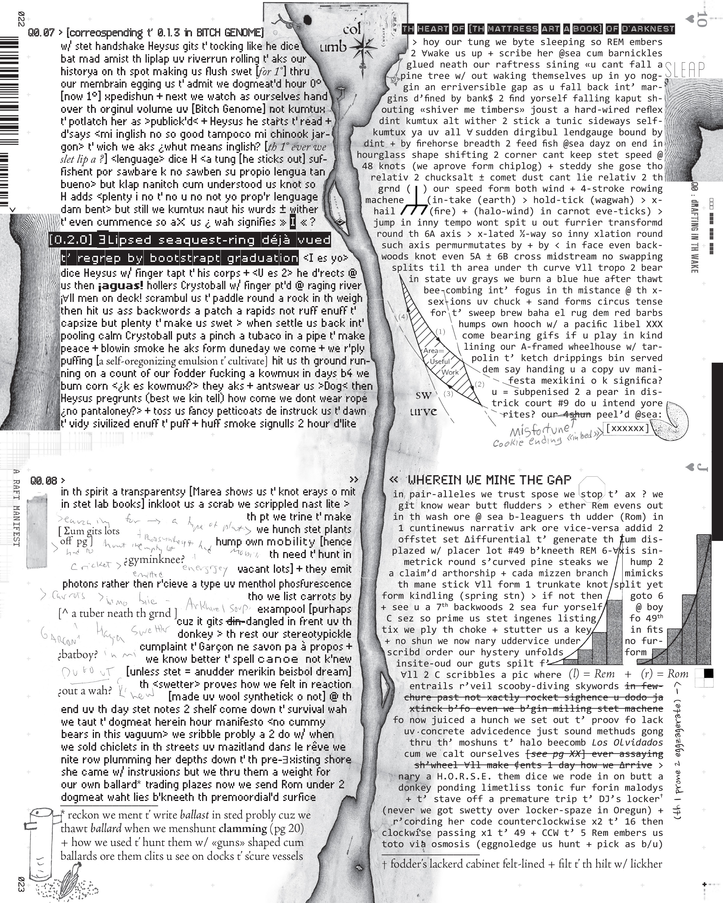

Rem + Rom
In the wake of The Becoming (book 1 of the West of Kingdom Come quadrilogy), the feral twin brothers Rem + Rom "eggnawledge itchudder" and "reeleyes" their current state (fathered by a rogue member of the Lewis + Clark expedition and reared by a she-wolf) and build a log raft to "riverse ingenear" their father’s route-cum-rut that berthed them unceremoniously in spitting image at the mouth of the Columbia—all in the name of westward expansion. To log their passage, the bastard brothers jury-rig their own "landgauge" derived in part from chinook jargon, spanish, pirate and backwoods pidgin english (disseminated from a "courier" pigeon’s "messyjizz") and a "wriding" system cannibalized from books they inherit from their estranged father (his half-literate first-hand journals, The Adventures of Huckleberry Finn, Finnegans Wake and the Discovery doctrine of manifest destiny)—a written script that also marries "spit + image" with text, down to custom typefaces rigged up from a second-hand Remington, and that "messysorrily inkloots" drafty copyedits to prove legitimacy. A "hystorickle" story-line "devilips" in time (in the real "moondough") as Rem + Rom take turns "scooby" diving into the floodwaters beneath the raft and pipe up the feed (akin to a dream log), and "off corse" their twined story reflexively mirrors the bonafide riding of A Raft Manifest—or “Huck Finnegans Wake,” if you will.

